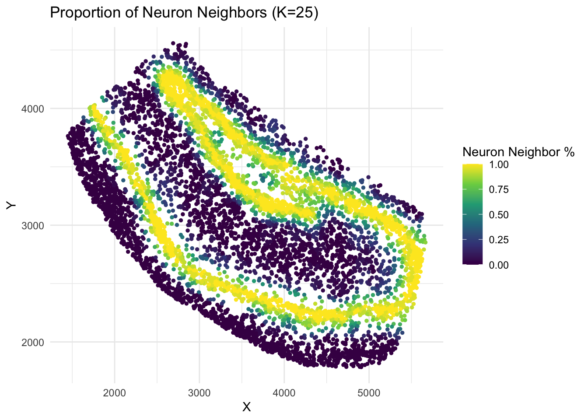

# download data
dir.create('data')
file_list <- c('gene_counts', 'cell_coords', 'neuron_cells', 'other_cells',
'positive_genes', 'negative_genes', 'other_genes')
for(filename in file_list) {
download.file(paste0('https://github.com/dmcable/BIOSTAT620/raw/main/data/p9/',filename,'.rds'),
destfile = paste0('data/',filename,'.rds'))
}Problem set 9
This problem set explores the analysis of high dimensional data in the application area of spatial transcriptomics. For reference, consult the following papers:
- Robust decomposition of cell type mixtures in spatial transcriptomics
- Cell type-specific inference of differential expression in spatial transcriptomics
Load in the data
We begin by downloading the data. Hint: run this once and leave it as eval = FALSE in your script.
Next, we load in the data and packages (note that counts is a sparse matrix):
# required packages
library(ggplot2)
library(Matrix)
library(tidyverse)── Attaching core tidyverse packages ──────────────────────── tidyverse 2.0.0 ──
✔ dplyr 1.1.4 ✔ readr 2.1.5
✔ forcats 1.0.0 ✔ stringr 1.5.1
✔ lubridate 1.9.4 ✔ tibble 3.2.1
✔ purrr 1.0.2 ✔ tidyr 1.3.1
── Conflicts ────────────────────────────────────────── tidyverse_conflicts() ──
✖ tidyr::expand() masks Matrix::expand()
✖ dplyr::filter() masks stats::filter()
✖ dplyr::lag() masks stats::lag()
✖ tidyr::pack() masks Matrix::pack()
✖ tidyr::unpack() masks Matrix::unpack()
ℹ Use the conflicted package (<http://conflicted.r-lib.org/>) to force all conflicts to become errors# load data
counts <- readRDS('data/gene_counts.rds') # gene counts matrix
coords <- readRDS('data/cell_coords.rds') # cell coords matrix
neuron_cells <- readRDS('data/neuron_cells.rds') # list of neuron cell barcodes.
other_cells <- readRDS('data/other_cells.rds') # list of non-neuron cell barcodes.
positive_genes <- readRDS('data/positive_genes.rds') # list of genes specific for neurons
negative_genes <- readRDS('data/negative_genes.rds') # list of genes specific for not neurons
other_genes <- readRDS('data/other_genes.rds') # selected list of other genes
all_genes <- c(positive_genes, negative_genes, other_genes) # all genes
small_counts <- as.matrix(counts[all_genes, c(neuron_cells, other_cells)]) # subset of the countsData visualization
- Begin by visualizing the coordinates of the cells in 2D space. Hint: this information is contained in the
coordsdataframe.
set.seed(2025)
### YOUR ANSWER HERE
coords$cell_type <- ifelse(rownames(coords) %in% neuron_cells, "neuron", "other")
ggplot(coords, aes(x = x, y = y, color = cell_type)) +
geom_point(alpha = 0.6) +
labs(title = "2D Cell Coordinates", x = "x", y = "y", color = "Cell Type") +
theme_classic()- Let’s now visualize the expression of the Hpca gene, which is specific for neurons. Begin by creating a histogram of the counts of the gene. Hint: examine the
countsmatrix.
### YOUR ANSWER HERE
hpca_counts <- as.numeric(counts["Hpca", ])
hpca_df <- data.frame(expression = hpca_counts)
ggplot(hpca_df, aes(x = expression)) +
geom_histogram(binwidth = 1, fill = "blue", color = "red") +
labs(title = "Histogram of Hpca Gene Expression",
x = "Hpca counts per cell",
y = "Number of cells") +
theme_classic()- Make a spatial plot of the gene expression of this gene. Use the cell coordinates as the spatial coordinates, and use gene expression counts as the color. Set a maximum threshold for your color scale based on the histogram above.
### YOUR ANSWER HERE
hpca_counts <- as.numeric(counts["Hpca", ])
coords$hpca_expr <- hpca_counts
max_expr <- quantile(hpca_counts, 0.95)
ggplot(coords, aes(x = x, y = y, color = pmin(hpca_expr, max_expr))) +
geom_point(size = 0.8) +
scale_color_viridis_c(option = "plasma", name = "Hpca expression") +
labs(title = "Spatial Plot of Hpca Gene Expression",
x = "X Coordinate",
y = "Y Coordinate") +
theme_classic()Distance
- Now, make a spatial plot of the cell types. Create a dataframe
plot_dfcontaining only the neurons and the non-neurons. Plot the neurons and non-neurons as two different colors. Hint: the neuron barcodes are inneuron_cells, and the non-neuron barcodes are inother_cells.
### YOUR ANSWER HERE
plot_df <- coords[rownames(coords) %in% c(neuron_cells, other_cells), ]
plot_df$cell_type <- ifelse(rownames(plot_df) %in% neuron_cells, "neuron", "other")
ggplot(plot_df, aes(x = x, y = y, color = cell_type)) +
geom_point(size = 0.8, alpha = 0.7) +
scale_color_manual(values = c("neuron" = "red", "other" = "blue")) +
labs(title = "Spatial Plot of Cell Types",
x = "X Coordinate",
y = "Y Coordinate",
color = "Cell Type") +
theme_classic()- Using only the cells selected above in
plot_df, compute the distance matrix pairwise between each cell (hint: userdistfromfields). and compute the k-nearest-neighbors withK = 25(hint useget.knnfromFNN). Choose the first cell, and visualize the spatial locations of the k nearest neighbors relative to that cell.
### YOUR ANSWER HERE
library(fields)Loading required package: spamSpam version 2.11-1 (2025-01-20) is loaded.
Type 'help( Spam)' or 'demo( spam)' for a short introduction
and overview of this package.
Help for individual functions is also obtained by adding the
suffix '.spam' to the function name, e.g. 'help( chol.spam)'.
Attaching package: 'spam'The following object is masked from 'package:Matrix':
detThe following objects are masked from 'package:base':
backsolve, forwardsolveLoading required package: viridisLite
Try help(fields) to get started.library(FNN)
coords_mat <- as.matrix(plot_df[, c("x", "y")])
dist_matrix <- rdist(coords_mat)
knn_result <- get.knn(coords_mat, k = 25)
first_cell_index <- 1
first_cell_coords <- coords_mat[first_cell_index, ]
neighbor_indices <- knn_result$nn.index[first_cell_index, ]
plot_df <- plot_df %>%
mutate(neighbor_type = case_when(
row_number() == first_cell_index ~ "First Cell",
row_number() %in% neighbor_indices ~ "Neighbor",
TRUE ~ "Other"
))
ggplot(plot_df, aes(x = x, y = y, color = neighbor_type)) +
geom_point(size = 0.8, alpha = 0.8) +
scale_color_manual(values = c(
"First Cell" = "blue",
"Neighbor" = "red",
"Other" = "grey"
)) +
theme_minimal() +
labs(title = "First Cell and Its 25 Nearest Neighbors",
x = "X Coordinate",
y = "Y Coordinate",
color = "Cell Status")- For each cell, calculate the proportion of neighbors that are neurons, and visualize these proportions spatially.
### YOUR ANSWER HERE
neighbor_matrix <- knn_result$nn.index
neuron_set <- neuron_cells
cell_names <- rownames(plot_df)
is_neuron_matrix <- matrix(cell_names[neighbor_matrix] %in% neuron_set,
nrow = nrow(neighbor_matrix))
neuron_prop <- rowMeans(is_neuron_matrix)
plot_df$neuron_neighbor_prop <- neuron_prop
head(plot_df$neuron_neighbor_prop)[1] 0.96 1.00 1.00 1.00 1.00 1.00ggplot(plot_df, aes(x = x, y = y, color = neuron_neighbor_prop)) +
geom_point(size = 1) +
scale_color_viridis_c(name = "Neuron Neighbor %") +
labs(
title = "Proportion of Neuron Neighbors (K=25)",
x = "X", y = "Y"
) +
theme_minimal()
Smoothing
- Using
loess, fit a 2D spatial smoothing function to the neuron proportion values. Usedegree = 1andspan = 0.05. Create a spatial plot with the color as the smooth fit.
### YOUR ANSWER HERE
loess_fit <- loess(
neuron_neighbor_prop ~ x + y,
data = plot_df,
degree = 1,
span = 0.05
)
plot_df$smoothed_prop <- predict(loess_fit)
ggplot(plot_df, aes(x = x, y = y, color = smoothed_prop)) +
geom_point(size = 1) +
scale_color_viridis_c(name = "Smoothed\nNeuron %") +
labs(
title = "LOESS-Smoothed Proportion of Neuron Neighbors",
x = "X Coordinate", y = "Y Coordinate"
) +
theme_minimal()- Visualize a 1-dimensional section of the smooth function. Filter for
ywithin50of3000. Plot both the proportion and the fitted smooth values in two separate colors.
### YOUR ANSWER HERE
section_df <- plot_df[abs(plot_df$y - 3000) <= 50, ]
section_df <- section_df[order(section_df$x), ]
ggplot(section_df, aes(x = x)) +
geom_line(aes(y = neuron_neighbor_prop, color = "Raw Proportion")) +
geom_line(aes(y = smoothed_prop, color = "Smoothed Fit")) +
scale_color_manual(values = c("Raw Proportion" = "red", "Smoothed Fit" = "blue")) +
labs(
title = "1D Section at y ≈ 3000",
x = "X Coordinate",
y = "Neuron Proportion",
color = "Legend"
) +
theme_minimal()Dimension reduction
- Using a subset of the counts (
small_counts), perform a PCA (hint: useprcomp). Plot the first principal component (hint: check thexvariable of theprcompobject) vs the total cellular count.
### YOUR ANSWER HERE
small_counts_t <- t(small_counts)
pca_result <- prcomp(small_counts_t, center = TRUE, scale. = TRUE)
total_counts <- colSums(small_counts)
pc1 <- pca_result$x[, 1]
plot_df_pca <- data.frame(PC1 = pc1, TotalCount = total_counts)
ggplot(plot_df_pca, aes(x = TotalCount, y = PC1)) +
geom_point(alpha = 0.6) +
labs(
title = "PC1 vs Total Gene Count per Cell",
x = "Total Gene Counts",
y = "First Principal Component (PC1)"
) +
theme_minimal()Comment on your finding:
YOUR SHORT ANSWER HERE PC1 is strongly negatively correlated with total gene counts, indicating it mainly reflects technical variation rather than biological structure.
- To mitigate this issue, we will normalize
small_countsby dividing each cell by the sum of the total counts. Hint: use thesweepfunction. Repeate the PCA with the normalized count matrix. Make a plot of percent of variance explained for each of the first 500 PCs (threshold this plot at 5% variance explained).
### YOUR ANSWER HERE
cell_totals <- colSums(small_counts)
normalized_counts <- sweep(small_counts, 2, cell_totals, FUN = "/")
normalized_counts_t <- t(normalized_counts)
pca_norm <- prcomp(normalized_counts_t, center = TRUE, scale. = TRUE)
var_explained <- pca_norm$sdev^2 / sum(pca_norm$sdev^2)
df_var <- data.frame(
PC = 1:500,
Variance = var_explained[1:500]
)
ggplot(df_var, aes(x = PC, y = Variance)) +
geom_line(color = "blue") +
geom_hline(yintercept = 0.05, linetype = "dashed", color = "red") +
labs(
title = "Variance Explained by First 500 PCs (Normalized Counts)",
x = "Principal Component",
y = "Proportion of Variance Explained"
) +
theme_minimal()- Make spatial plots visualizing the first four PCs in spatial coordinates.
### YOUR ANSWER HERE
pc_scores <- as.data.frame(pca_norm$x[, 1:4])
colnames(pc_scores) <- paste0("PC", 1:4)
plot_pc_df <- cbind(plot_df[, c("x", "y")], pc_scores)
plot_pc_long <- pivot_longer(
plot_pc_df,
cols = starts_with("PC"),
names_to = "PC",
values_to = "Score"
)
ggplot(plot_pc_long, aes(x = x, y = y, color = Score)) +
geom_point(size = 1) +
scale_color_viridis_c(option = "plasma") +
facet_wrap(~ PC, ncol = 2) +
labs(
title = "Spatial Maps of First Four Principal Components",
x = "X Coordinate",
y = "Y Coordinate"
) +
theme_minimal()- For the first 20 pcs, compute the average weight for each of the following sets of genes:
positive_genes,negative_genes, andother_genes. Create ageom_pointplot of these with PC index as the x-axis, average weight as the y axis, and gene list type as the color.
### YOUR ANSWER HERE
loadings <- as_tibble(pca_norm$rotation[, 1:20], rownames = "gene")
loadings <- loadings %>%
mutate(GeneSet = case_when(
gene %in% positive_genes ~ "positive",
gene %in% negative_genes ~ "negative",
gene %in% other_genes ~ "other",
TRUE ~ NA_character_
)) %>%
filter(!is.na(GeneSet))
avg_loadings <- loadings %>%
pivot_longer(cols = starts_with("PC"), names_to = "PC", values_to = "loading") %>%
group_by(PC, GeneSet) %>%
summarise(mean_loading = mean(loading), .groups = "drop")
ggplot(avg_loadings, aes(x = as.numeric(str_remove(PC, "PC")), y = mean_loading, color = GeneSet)) +
geom_point(size = 2) +
theme_minimal() +
labs(
title = "Average PC Loadings for Gene Sets (First 20 PCs)",
x = "Principal Component",
y = "Average Gene Weight",
color = "GeneSet"
)- Now, remake the previous plot for the first five PCs and include standard error bars.
### YOUR ANSWER HERE
avg_loadings_se <- loadings %>%
pivot_longer(cols = starts_with("PC"), names_to = "PC", values_to = "loading") %>%
group_by(PC, GeneSet) %>%
summarise(
mean_loading = mean(loading),
se_loading = sd(loading) / sqrt(n()),
.groups = "drop"
) %>%
filter(as.numeric(str_remove(PC, "PC")) <= 5)
ggplot(avg_loadings_se, aes(x = as.numeric(str_remove(PC, "PC")), y = mean_loading, color = GeneSet)) +
geom_point(size = 2) +
geom_errorbar(aes(ymin = mean_loading - se_loading, ymax = mean_loading + se_loading), width = 0.2) +
theme_minimal() +
labs(
title = "Average PC Loadings for Gene Sets (with SE)",
x = "Principal Component",
y = "Average Gene Weight",
color = "GeneSet"
)Which of the first 5 PCs appear to have statistically significant differences across gene types?
YOUR SHORT ANSWER HERE PC1 appears to have statistically significant differences across gene types, as the confidence intervals for the positive, negative, and other gene groups do not overlap.